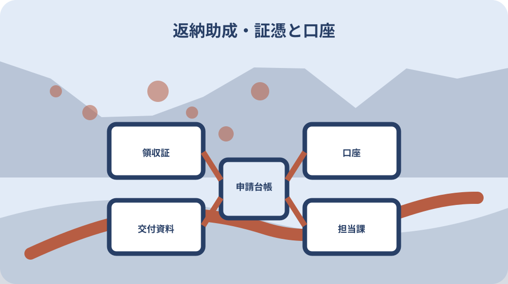

先に結論を確認する
この記事の答え：運転経歴証明書等の交付日から一年以内と、公共交通利用券の購入日から三か月以内を別の起算日で管理します。危機管理課と福祉課、手数料の証憑と利用券の領収証、本人名義口座と委任状の要否も二申請へ分けて記録します。
森町で最初に照合する条件：本人の年齢は返納日だけでなく、利用券を購入する日現在で判定し、65歳以上75歳未満なら経歴証明書の写しを利用券助成資料へ入れる。
結論は返納日と二つの助成期限を一枚にする
森町で運転免許を自主返納するときの成果物は、返納した事実だけを残すメモではありません。返納日、運転経歴証明書等の交付日、公共交通利用券の購入日、二つの助成申請日を並べ、各制度の起算資料と提出控えを結ぶ一件台帳です。
森町には運転経歴証明書等の交付手数料を助成する制度と、対象となる公共交通利用券の購入費を助成する制度があります。前者は経歴証明書等の交付を受けてから一年以内、後者は利用券を購入した日から三か月以内です。期限の起点も担当窓口も同じではありません。
一件台帳の上段には本人の氏名、年齢、住所、免許の有効期限、返納方法、経歴証明書の持ち方を書きます。下段には二つの担当課、起算日、期限、添付資料、振込口座、申請資料の保管場所を置きます。申請ごとの完了状態も分けます。
この記事は返納を勧めたり、運転継続の可否を判定したりするものではありません。本人の意思と安全運転相談等を尊重し、返納を選ぶ場合に日程と資料の抜けを防ぐための整理方法です。体調や認知機能の判断は医療機関や警察の相談窓口へつなぎます。
二つの起算日を空欄のまま先に置く
一件台帳を作る時点では、運転経歴証明書等の交付日も公共交通利用券の購入日も未定で構いません。上段に『交付日→一年以内』、下段に『購入日→三か月以内』という二本の空欄を先に置き、返納日だけから両期限を計算しない構造にします。
証明書を申請した日と実際に交付を受けた日は別欄です。警察窓口で後日交付になる場合、申請日を町の交付手数料助成の起算日に写さず、交付日が確認できる資料を受け取ってから一年期限を記入します。
利用券も、候補を決めた日、販売先へ問い合わせた日、代金を支払って購入した日を分けます。森町の利用券助成は購入日から三か月以内なので、検討開始日や自主返納日を起算日にしません。領収証の日付と券の購入日が対応するかも同じ行で確認します。
台帳の期限欄は日付だけでなく、起算資料、計算者、確認日を持たせます。一年後・三か月後の日が休日に当たる場合や期限日の数え方に迷う場合は、独自に翌開庁日へ延ばさず、それぞれの担当課へ余裕をもって確認した回答を記録します。
本人申請・代理申請・紛失中を分けて窓口を選ぶ
静岡県警察は、自主返納の場所として県内警察署の運転免許窓口、森分庁舎を含む分庁舎、各運転免許センターを案内しています。ただし、本人が行く場合と代理人が行く場合、免許証を手元に持つ場合と亡失中の場合では必要物と受付場所が同じではありません。
本人申請なら、従来の免許証とマイナ免許証の二枚を持つ人は二枚とも必要です。マイナンバーカードへ運転経歴情報を記録する人はカードも用意します。免許の持ち方を家族が推測せず、本人の財布と保管場所を一緒に確認します。
代理申請では本人の免許証等、代理人の本人確認資料、関係を示す資料、指定様式などが必要です。経歴証明書等の代理申請には同時申請等の条件もあるため、家族だから同じ手順でできると考えず、予定する窓口へ事前に問い合わせます。
免許証等をなくしている人の自主返納・抹消は、静岡県警察が運転免許センターだけで扱うと案内しています。森分庁舎が近くても、亡失中なら出発先を変える必要があります。本人確認資料、写真、移動方法をセンターへ確かめ、遠距離移動を無駄にしません。
運転経歴証明書の持ち方と交付日を固定する
自主返納と運転経歴証明書等の申請は関係しますが、同じ言葉ではありません。返納日、経歴証明書等を申請した日、実際の交付・記録日を三欄に分けます。森町の二つの助成では、経歴証明書の交付を受けたことや写しが条件になるため、交付日を曖昧にしません。
静岡県警察は、カード型の運転経歴証明書、マイナンバーカードへの運転経歴情報記録、双方を持つ方法を案内しています。手数料はそれぞれ異なります。本人が日常の本人確認に何を使うか、マイナンバーカードを持ち歩くかを話し、方法を選びます。
受付場所や本人・代理の別によって即日交付か後日交付かが変わり得ます。返納した日に必ず経歴証明書を持ち帰れるとは置かず、受取予定日と受取方法を確認します。後日なら、その間に本人確認へ使う別資料と利用券購入時期を日程へ加えます。
返納・抹消または失効後五年以内という県警の経歴証明書等の申請期間と、森町の交付手数料助成の一年期限は別です。経歴証明書を申請できる期間が残っていても、町助成の申請期限まで同じとは限りません。交付日を町助成の起点として管理します。
交付手数料助成の一年期限を閉じる
森町の交付手数料助成は、町内在住の65歳以上で経歴証明書の交付を受けた人が対象です。申請期限は交付から一年以内で、一人一回限りです。年齢、住所、交付日を申請表の先頭で照合し、家族の証明書と取り違えません。
町は申請書に加え、経歴証明書またはマイナンバーカード表面の写し、手数料を証明する領収書等を求めています。県警窓口でもらった領収書を交通費の領収書と同じ封筒に入れず、『交付手数料助成』の透明袋へ交付日順で保管します。
申請時には印鑑と預金通帳が案内され、振込口座は経歴証明書等の交付を受けた本人名義です。家族が費用を立て替えた場合でも、家族口座へ振り込まれると自己判断しません。名義を確認してから申請書へ転記します。
一年という期間が長く見えても、もう一方の三か月期限と並行すると領収書を取り違えやすくなります。交付日当日に期限日を記入し、写しを作る日、町へ提出する日、振込を確認する日を置きます。提出しただけで完了とせず、受付や送付を確認できる控えを残します。
利用券の購入証憑を第二申請へ結ぶ
森町公共交通利用券助成の対象には、町営バス、天竜浜名湖鉄道、秋葉バス、県タクシー協会加盟タクシーに関係する複数の券があります。本稿では路線や使い勝手を比較せず、購入した券の正式名称、販売先、購入日、金額、領収証番号を第二申請の台帳へ正確に移すことに集中します。
複数の券を購入した場合は、領収証ごとに購入日と金額を一行ずつ記録します。助成申請をまとめられるか、購入日が異なる券の三か月期限をどう扱うかは福祉課へ確認し、最も新しい購入日に全券の期限をそろえる自己判断はしません。
券そのものの購入条件と森町助成の対象条件も別欄です。購入できた事実だけで助成対象と確定せず、購入日の年齢、町民要件、運転経歴証明書の交付状況、同一年度の他助成との関係を購入前確認欄へ置きます。
販売先で領収証を受け取ったら、原本を『利用券助成』の封筒へ入れ、台帳には写しの保管場所を記します。交付手数料の領収書と同じ封筒へ入れず、どちらの費用を証明する原本かを制度名、購入日または交付日、金額で照合します。
利用券助成の三か月期限を別に管理する
公共交通利用券助成の期限は、券を購入した日から起算して三か月以内です。経歴証明書の交付日や自主返納日から三か月ではありません。利用券ごとに購入日、領収証日、三か月の期限を記し、複数購入時は福祉課へ申請のまとめ方を確認します。
助成額は一人につき一年度当たり上限三千円です。年度は四月一日から翌年三月三十一日までと町が示しています。年度末近くの購入では、購入日から三か月という期限だけでなく、どの年度分として扱われるかを購入前に確認します。
申請は、販売先で利用券を購入して領収証を受け取り、申請書等を用意し、添付資料と共に郵送または福祉課へ持参する流れです。券を使い切るまで申請を待つ制度とは書かれていません。購入後すぐ申請準備を始めます。
申請書を投函した日、福祉課へ届いた日、内容確認、口座振込は別の出来事です。郵送なら控えを作り、振込を通帳で確認した日まで記録します。不備の連絡を受けたときに、どの券と領収証の申請かすぐ示せる番号を付けます。
年齢と他のタクシー助成を購入前に照合する
利用券助成は、購入日に75歳以上の町民、または購入日に65歳以上で経歴証明書の交付を受けた町民が対象です。返納日に64歳で、その後65歳になる場合などは、返納日だけで対象を決めず、実際の購入日に年齢と証明書の状態を確認します。
65歳以上75歳未満の申請では、経歴証明書の写しが添付資料として案内されています。マイナンバーカードへ経歴情報だけを記録した場合の提示・写し方は、町ページの文言を自己流で置き換えず、購入前に福祉課へ確認します。必要以上の個人番号を複写しません。
同一年度に森町在宅重度心身障害者タクシー運賃助成を受けた人、または受ける予定の人は対象外です。本人が別制度名を覚えていない場合もあるため、家族が通帳、決定通知、手元の券を確認し、制度の担当へ重複条件を尋ねます。
利用券を購入してから対象外と分かると、券自体は使えても助成を見込んだ家計表が変わります。年齢、町民であること、経歴証明書、他の助成、年度上限を『購入前の五点』として照会し、回答日と部署を残してから券種と購入額を決めます。
交付日・購入日・提出日を版管理する
台帳の初版には未確定欄を残し、運転経歴証明書等の交付を受けた日に交付日と交付資料を追記します。次に利用券の購入時点で購入日と領収証を追記し、それぞれの期限計算を行います。後から日付を修正した場合は旧値を消さず、修正理由と確認資料を版履歴へ残します。
交付手数料助成の提出日と利用券助成の提出日は別行です。危機管理課への申請を終えた日を福祉課への申請済み印へ転記せず、提出方法、受付を確認した日、不備連絡、補正日、振込確認日まで二つの色で追います。
郵送では投函日と町への到達確認を同じ日にしません。持参でも書類を窓口へ見せた日と受理された日が同じかを控えで確認します。期限内かどうかを家族の記憶だけで説明せず、申請書控え、送付記録、町からの連絡を各申請へ結びます。
台帳を家族で共有するときは、更新者と更新日時を明記します。口座番号や証明書画像を一覧へ貼り付けず、『本人名義確認済み』『原本は申請封筒』のように状態と保管場所を記し、必要な人だけが原本へたどれる索引にします。
申請後に券を追加購入したり、証明書の持ち方が変わったりした場合は、既存行を上書きしません。新しい購入や手続が同じ助成年度・一人一回条件にどう関係するかを担当課へ確認し、回答日と担当課を新しい版へ追記します。
領収書・口座・証明書を二つの申請へ振り分ける
二つの助成は名称が似ていても、領収書の対象が違います。交付手数料助成には経歴証明書等の手数料を証明する書類、利用券助成には券を購入した領収証原本を使います。封筒を二つに分け、表紙へ制度名、起算日、期限、提出先を書きます。
交付手数料助成では本人名義口座が案内されています。利用券助成では通帳表紙の写しを求め、本人以外の口座には委任状を求めています。同じ口座条件だとまとめず、各申請書の指定を読みます。口座番号を家族共有表へ無制限に載せません。
経歴証明書やマイナンバーカードの写しには本人情報があります。町へ提出する資料、家族が進捗を知るための一覧、原本保管を分けます。家族共有表には『写し作成済み・提出袋に保管』とだけ記し、必要のない画像送信を避けます。
申請後は、提出日、方法、控え、町からの連絡、補正資料、振込日を制度別に閉じます。返納関係の資料を一冊にまとめる場合も、仕切りを残します。振込額と申請額に差があれば、家族だけで理由を補わず、どちらの制度について町へ確認したかを記録します。次年度に利用券助成を検討するとき、前年の券種と助成額を見直せる形にします。

大石の視点：一件台帳で二つの期限を混ぜない
ここまでの対象年齢、一年期限、三か月期限、添付資料、口座条件は森町と静岡県警察の公的資料に基づく事実です。ここからは私、大石浩之が勧める記録方法であり、町が指定する申請様式そのものではありません。
私は『免許返納助成』という一つの封筒を作らず、交付手数料助成と利用券助成を左右に分けた一件台帳を使います。似た制度名でも、起算日、担当課、支出を証明する書類、口座条件が違い、一方の申請完了が他方の完了を意味しないからです。
私見では、期限管理で最も危ないのは返納日をすべての起点にすることです。返納日は経緯として残しつつ、一年欄には交付日、三か月欄には購入日だけを転記し、資料にない日付を推定しません。空欄には確認先と確認予定日を書きます。
台帳の価値は申請を急がせることではなく、本人と家族が未完了を同じ意味で読める点にあります。『書類準備中』『提出済み』『補正中』『振込確認済み』を分け、公的要件と私の管理提案を混ぜずに残すのが実務的だと考えます。
家族へ二起算日と二申請の完了を引き継ぐ
引継ぎ表の表紙には、経歴証明書等の交付日と一年期限、利用券の購入日と三か月期限を左右に置きます。各列に提出日、受付確認、不備補正、振込確認日を並べ、日付未定なら確認する担当と予定日を書きます。
第一申請の袋には交付手数料を証明する領収書等、経歴証明書等の写し、本人名義口座の確認記録を置きます。第二申請の袋には利用券の領収証原本、通帳表紙の写し、年齢に応じた経歴証明書の写し、必要な場合の委任状を置き、資料を相互流用しません。
今日できる一歩は、白紙を二列に分け、危機管理課と福祉課、交付日と購入日、一年と三か月、必要資料と口座条件を書き分けることです。実日付が未確定でも、二つの起算点を混ぜない台帳の枠は先に作れます。
次年度に利用券助成を検討する場合は、前年の金額や対象券をそのまま写さず、当年度の森町公式ページで対象、上限、期限を再確認します。一方、一人一回限りの交付手数料助成は前年台帳を見て申請済みかを確認し、新規申請と決めつけません。
本人が転居したり口座を変更したりした場合は、提出済み申請書を上書きしません。変更日、町へ確認した内容、新しい連絡先を別版へ追加し、当時提出した資料と現在の情報を区別します。家族は原本の保管者と町からの連絡を受ける担当も引き継ぎます。